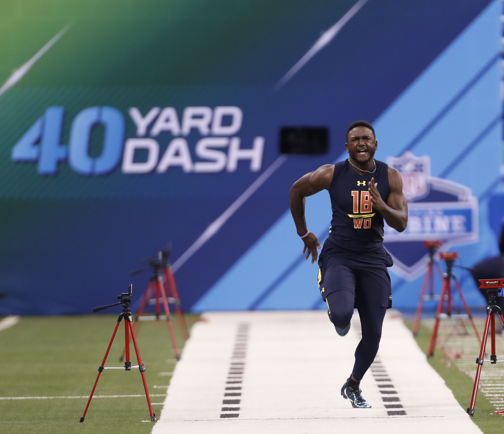
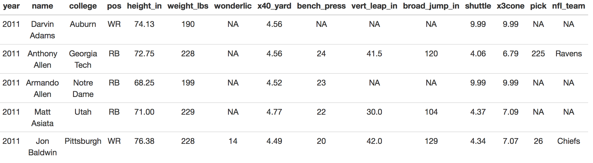
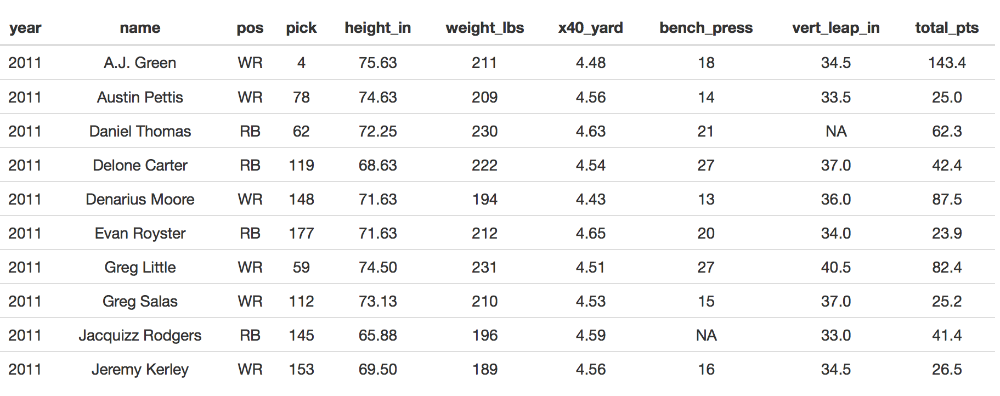
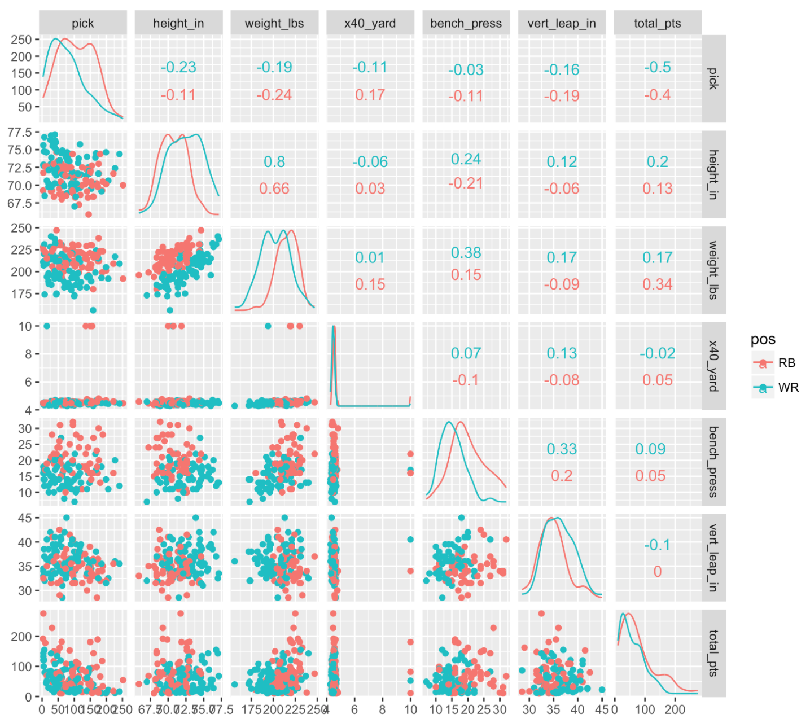
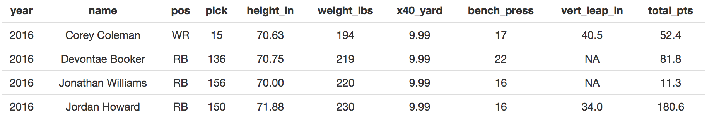
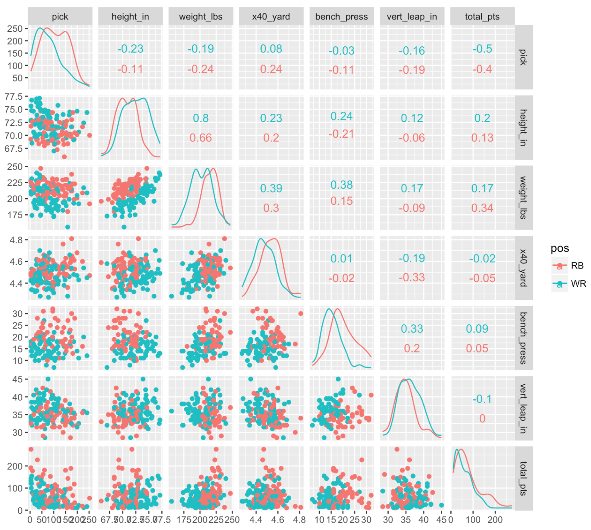

Drafting a rookie in Fantasy Football can be a risky move, but it can pay huge dividends if you happen to snag a diamond in the rough. After accounting for a player’s draft position, do physical attributes (height/weight) and combine performance (40 yard dash, bench press, etc.) provide any additional explanatory power of points scored during a player’s first NFL season? I’ll explore this question for rookie Running Backs and Wide Receivers.

I’m not the first person to investigate the relationship between combine stats/physical attributes and player performance (see here). However, prior analyses have focused on performance over a longer period of time, such as the first three years in the league. This makes perfect sense from the perspective of an NFL team, as rookies are typically signed for longer than a one year contract. In contrast, most fantasy football leagues operate like one year contracts; you draft a new team at the beginning of each year. Thus, in the case of NFL rookies, I’m interested exclusively in first year NFL performance.
The NFL combine is like the SAT or ACT except for football, with more lifting and less clothing. It’s a chance for NFL teams to see how fast and strong NFL hopefuls are in a controlled environment. During the combine players typically complete the following events:
In addition players’ height and weight are measured. This data gives NFL team’s a holistic perspective to evaluate players. Despite a number of findings indicating the limited utility of this information translating into actual performance in the NFL, the difference between a 4.4 second and 4.6 second 40 yard dash can mean big differences in draft position.
Most rookies in the NFL enter a team through the draft. A player’s draft position is a reasonable proxy for their perceived value. If a rookie is believed to be a game-changer, then they’ll have a low draft position; if they have some skills but need a little more work, then they’ll have a higher draft position. Indeed, rookie pay is directly correlated with draft position, such that players drafted in earlier rounds are paid more money than those drafted later. Thus draft position should relate to first-year performance, otherwise teams would just choose players at random, hoping to land the next Tom Brady or Julio Jones based on the phases of moon or their horoscopes.
I adopted a common scoring system from most standard fantasy football leagues when quantifying first year performance:
For example, let’s say you draft a running back and he scores five touchdowns, rushes for 500 yards, and fumballs the ball twice during his rookie season. The points for this player would be (5 * 5) + (500 * 0.1) + (2 * -2) = 71 points. Additionally, 50 rushing or receiving yards is considered equalivant to 1 touchdown.
The first thing we’ll do is pull combine results and draft position data for all rookies in the NFL from 2011-2016. The rvest package will do the heavy lifting.
library(rvest)
library(dplyr)
library(janitor)
library(GGally)
library(zeallot)
library(knitr)
library(mgcv)
setwd('your_wd_here')
years = seq(2011, 2016)
combine_data = data.frame(NULL)
draft_position_data = data.frame(NULL)
for(y in years){
print(paste0("COLLECTING DATA FROM ", y))
combine_url = paste0('http://nflcombineresults.com/nflcombinedata.php?year=',
y,
'&pos=&college=')
# collect combine data
yearly_combine_data = combine_url %>%
read_html() %>%
html_nodes(xpath = '//*[@id="datatable"]/table') %>%
html_table(fill = TRUE, header = TRUE) %>%
as.data.frame()
combine_data = bind_rows(combine_data,
yearly_combine_data)
draft_position_url = paste0('http://www.drafthistory.com/index.php/years/',
y)
# collect draft position data
yearly_draft_data = draft_position_url %>%
read_html() %>%
html_nodes(xpath = '//*[@id="main"]/table[1]') %>%
html_table(fill = TRUE, header = TRUE) %>%
as.data.frame()
names(yearly_draft_data) = yearly_draft_data[1,]
yearly_draft_data[2:nrow(yearly_draft_data),]
yearly_draft_data$year = y
draft_position_data = bind_rows(draft_position_data,
yearly_draft_data)
}
Next we’ll do a bit of data munging and then join the draft and combine data together.
draft_position_data_clean = draft_position_data %>%
filter(Player != 'Player') %>%
clean_names() %>%
select(-pick, -round, -college, -position) %>%
dplyr::rename(nfl_team = team,
pick = player)
combine_data_clean = combine_data %>%
clean_names() %>%
select(-na, -na_1)
# filter only players that are Running Backs & Wide Receivers
combine_draft_join = left_join(combine_data_clean,
draft_position_data_clean) %>%
filter(pos %in% c('RB', 'WR'))
And let’s have a look at the first five rows of data.

Overall looks good. One thing you’ll notice is that a lot of the players who participated in the combine don’t have a draft pick, which means that they were never drafted by a team. While there are many examples of undrafted players going on to have stellar rookie careers, these guys don’t show up much during the fantasy draft process. Thus any player without a draft pick is considered in the following analyses.
Next we’ll collect the outcome variable – how many points each player scored during their rookie season. For that we’ll enlist the service of the nflgame python package. We’ll write out the players and their rookie years to the rookies.csv file, pull that data into python, collect the first year stats, and then pull the output back into R.
input_file_name = "rookie_names_years.csv"
python_script_name = "collect_rookie_stats.py"
output_file_name = "year_1_rookie_stats.csv"
combine_draft_join %>%
select(year, name) %>%
write.csv(input_file_name,
row.names = FALSE)
exe_pyscript_command = paste0("//anaconda/bin/python ",
python_script_name,
" ",
"'", input_file_name, "'",
" ",
"'", output_file_name, "'"
)
print(exe_pyscript_command)
We’ll execute the collect_rookie_stats.py script from within R, then read the rookie_stats.csv file back into R.
system(exe_pyscript_command)
import sys
import pandas as pd
import nflgame
from pandasql import *
def collect_rushing_stats(year, week, players):
rushing_stats = list()
for p in players.rushing():
rushing_stats.append([year,
week,
" ".join(str(p.player).split(" ")[:2]),
p.rushing_tds,
p.rushing_yds,
p.fumbles_lost])
rushing_df = pd.DataFrame(rushing_stats)
rushing_df.columns = ['year',
'week',
'name',
'rushing_tds',
'rushing_yds',
'rushing_fb']
return(rushing_df)
def convert_rushing_pts(td_pts, rushing_pts, fb_pts):
return(pysqldf("""
SELECT year,
name,
td_pts + rushing_pts + fb_pts AS total_pts
FROM
(SELECT year,
name,
SUM(rushing_tds) * {td_pts} AS td_pts,
SUM(rushing_yds) * {rushing_pts} AS rushing_pts,
SUM(rushing_fb) * {fb_pts} AS fb_pts
FROM rb_df_temp
GROUP BY year, name)
NATURAL JOIN
rookie_df
""".format(td_pts = td_pts,
rushing_pts = rushing_pts,
fb_pts = fb_pts
)))
def collect_receiving_stats(year, week, players):
receiving_stats = list()
for p in players.receiving():
receiving_stats.append([year,
week,
" ".join(str(p.player).split(" ")[:2]),
p.receiving_tds,
p.receiving_yds,
p.fumbles_lost])
receiving_df = pd.DataFrame(receiving_stats)
receiving_df.columns = ['year',
'week',
'name',
'receiving_tds',
'receiving_yds',
'receiving_fb']
return(receiving_df)
def convert_receiving_pts(td_pts, receiving_pts, fb_pts):
return(pysqldf("""
SELECT year,
name,
td_pts + receiving_pts + fb_pts AS total_pts
FROM
(SELECT year,
name,
SUM(receiving_tds) * {td_pts} AS td_pts,
SUM(receiving_yds) * {receiving_pts} AS receiving_pts,
SUM(receiving_fb) * {fb_pts} AS fb_pts
FROM wr_df_temp
GROUP BY year, name)
NATURAL JOIN
rookie_df
""".format(td_pts = td_pts,
receiving_pts = receiving_pts,
fb_pts = fb_pts
)))
def main(input_file_path, output_file_path):
# define scoring scheme, years, & weeks here
td_pts = 5
receiving_pts = rushing_pts = 0.1
fb_pts = -2
game_years = range(2011, 2017)
game_weeks = range(1, 17)
# input file
global rookie_df
rookie_df = pd.read_csv(input_file_path)
# store stats for each year in player_stats_df
global player_stats_df
player_stats_df = pd.DataFrame()
for year in game_years:
print("Processing Game Data From {year}".format(year = year))
temp_df = rookie_df[rookie_df['year'] == year]
global rb_df_temp
rb_df_temp = pd.DataFrame()
global wr_df_temp
wr_df_temp = pd.DataFrame()
for week in game_weeks:
games = nflgame.games(year, week)
players = nflgame.combine_game_stats(games)
rb_df_temp = rb_df_temp.append(collect_rushing_stats(year,
week,
players))
wr_df_temp = wr_df_temp.append(collect_receiving_stats(year,
week,
players))
print 'calculating running back points'
player_stats_df = player_stats_df.append(convert_rushing_pts(td_pts,
rushing_pts,
fb_pts,
))
print 'calculating wide receiver points'
player_stats_df = player_stats_df.append(convert_receiving_pts(td_pts,
receiving_pts,
fb_pts
))
# aggregate rookies that have both receiving and running stats
stats_final_df = pysqldf("""
SELECT year, name, SUM(total_pts) as total_pts
FROM player_stats_df
GROUP BY year, name
""")
stats_final_df.to_csv(output_file_path, index = False)
if __name__ == "__main__":
pysqldf = lambda q: sqldf(q, globals())
main(sys.argv[1], sys.argv[2])
Below we’ll read the output from the collect_rookie_stats.py script back into R and examine the top 10 rows. We’ll also apply a few filters. First, all non-draft picks are eliminated from consideration. We want to control for draft pick, given that our central question is whether we can explain variation in first year performance from information other than draft pick. Second, all rookies with less than 10 points (an arbitrary cutoff) during their rookie season are eliminated. This is to remove some of the noise that is unrelated to performance (e.g., low points due to injury and not poor performance).
rookie_stats = read.csv(output_file_name) %>%
inner_join(combine_draft_join) %>%
filter(pos %in% c("WR", "RB") &
is.na(pick) == FALSE &
total_pts >= 10) %>%
mutate(pick = as.numeric(pick),
pos = as.factor(pos)) %>%
select(year, name, pos, pick,
height_in, weight_lbs, x40_yard,
bench_press, vert_leap_in,
total_pts)

We now have all of the necessary data. We’ll visualize the bivariate relationships between our variables, segmented by position (Running Back or Wide Receiver) for a quick quality check.
g = ggscatmat(rookie_stats,
columns = 4:dim(rookie_stats)[2],
color = "pos")
plot(g)

Everything looks good except for the 40 yard dash field. Most players fall in the 4-6 range except a few. Let’s examine observations with a 40 yard dash time greater than six seconds.
rookie_stats %>% filter(x40_yard > 6)

It looks like missing or invalid 40 yard dash times were coded with 9.99. Let’s sub these values with NAs and re-run the plot above.
rookie_stats$x40_yard = ifelse(rookie_stats$x40_yard == 9.99,
NA,
rookie_stats$x40_yard)
g = ggscatmat(rookie_stats,
columns = 4:dim(rookie_stats)[2],
color = "pos")
plot(g)

Ahh that’s better. Now we’re ready to do some analyses.
Based on the scatterplot matrix, draft pick explains a fair amount of variability in first-year fantasy points. Teams shell out millions of dollars for rookie players, so it’s not surpising that points and pick number are inversely related, such that lower picks (1, 2, 3) score more fantasy points during their first season than higher picks. The other variable that exhibits a relationship with points is weight, which is moderated by position. Running Backs (RBs) appear to benefit more from having a few extra pounds relative to Wide Receivers (WRs). Being able to punch the ball in from the 1-yard line means more touchdowns. Having a more robust build might translate into fewer injuries and missed games. And being heavier would make an RB harder to tackle, which means more running yards. Having extra weight is less beneficial to a WR, as they rely on their speed and agility to create seperation from defenders. Indeed, heavier players run slower 40-yard dash times, and I haven’t seen too many successful WRs in the NFl who were slow. This suggests that given the option between a lighter or heavier RB, go with the big guy.
Teams do seem to factor the weight of an RB into their draft strategy, as heavier RBs are drafted earlier on. But the question is whether weight is still significant after controlling for draft pick number and accounting for position (WR vs. RB). I’ll apply my two favorite modeling approaches when interpretation is paramount: Linear Model (LM) and General Additive Model (GAM). Pick number is present in both models. The LM features an interaction term to capture the disparate relationship between weight and position. The GAM model has a smoother for both weight and pick number, and position is included as a dummy variable. For those unfamiliar with GAM, it’s a fantastic approach for modeling non-linear relationships while maintaining a highly interpertable model. The one drawback is that it is Additive and thus doesn’t account for interactions (of course you can add interactions terms into the model, but then it’s no longer a GAM). We’ll use LOOCV (leave-one-out-cross-validation) to determine which method of describing the data generating process is most generalizable.
# function for cross validation
split_data = function(input_df, pct_train){
set.seed(1)
data_list = list()
random_index = sample(1:nrow(input_df), nrow(input_df))
train_index = random_index[1:(floor(nrow(input_df) * pct_train))]
data_list[['train_df']] = input_df[train_index,]
data_list[['test_df']] = input_df[setdiff(random_index, train_index) ,]
return(data_list)
}
input_df = rookie_stats
pct_train = 0.8
fdata = split_data(input_df, pct_train)
row_index = sample(1:nrow(fdata$train_df), nrow(fdata$train_df))
# empty vectors to store prediction errors during LOOCV
lm_pred = c()
gam_pred = c()
for(i in row_index){
# training data
temp_train = fdata$train_df[setdiff(row_index, i),]
# validation datum
temp_validation = fdata$train_df[i,]
# linear model
temp_fit_lm = lm(total_pts ~ weight_lbs * pos + pick,
data = temp_train)
# GAM model
temp_fit_gam = mgcv::gam(total_pts ~ s(weight_lbs) + s(pick) + pos,
data = temp_train)
# linear model prediction
lm_pred = c(lm_pred,
predict(temp_fit_lm, temp_validation))
# GAM model prediction
gam_pred = c(gam_pred,
predict(temp_fit_gam, temp_validation))
}
Let’s consider two different measures of performance.
r_squared = function(actual, predicted){
return(1 - (sum((actual-predicted )^2)/sum((actual-mean(actual))^2)))
}
median_abs_error = function(actual, predicted){
return(median(abs(actual-predicted)))
}
validation_actuals = fdata$train_df$total_pts[row_index]
validation_perf = data.frame(model = c("LM", "GAM"),
# calculate r-squared
r_squared = c(r_squared(validation_actuals,lm_pred),
r_squared(validation_actuals,gam_pred)),
# calculate MAE
median_abs_err = c(median_abs_error(validation_actuals, lm_pred),
median_abs_error(validation_actuals, gam_pred))) %>%
mutate_if(is.numeric, round, 2)
print(validation_perf)
model r_squared median_abs_err
1 LM 0.17 26.15
2 GAM 0.17 27.08
The LM performed similiarly to the GAM, so we’ll use the simpler, LM model on the entire training set and examine the coefficients.
train_fit = lm(total_pts ~ weight_lbs * pos + pick,
data = fdata$train_df)
summary(train_fit)
Call:
lm(formula = total_pts ~ weight_lbs * pos + pick, data = fdata$train_df)
Residuals:
Min 1Q Median 3Q Max
-70.946 -27.584 -9.839 17.944 157.722
Coefficients:
Estimate Std. Error t value Pr(>|t|)
(Intercept) -176.63257 101.66213 -1.737 0.08490 .
weight_lbs 1.31363 0.46120 2.848 0.00518 **
posWR 235.87977 119.20973 1.979 0.05016 .
pick -0.31399 0.07396 -4.245 4.35e-05 ***
weight_lbs:posWR -1.21318 0.56198 -2.159 0.03288 *
---
Signif. codes: 0 ‘***’ 0.001 ‘**’ 0.01 ‘*’ 0.05 ‘.’ 0.1 ‘ ’ 1
Residual standard error: 43.19 on 119 degrees of freedom
Multiple R-squared: 0.2424, Adjusted R-squared: 0.217
F-statistic: 9.52 on 4 and 119 DF, p-value: 1.033e-06
Interestingly, even after controlling for pick number, the interaction term is still significant. Intepreting interactions terms can be tricky, and I’ve found it helpful to just plug in a range of numbers for the variable you’re interested in and hold everything else constant to see how the predicted value changes. So that’s what we’ll do here. We’ll hold pick number at the mean, enter “RB” for the position dummy variable, and then generate a sequence between the 5th and 95th percentiles of weight. The slope of our predicted values indicate how many additional points we expect to score during a season for each RB pound.
# select 5th and 95th percentiles for weight
# hold pick number and position constant
q5_95 = unname(quantile(fdata$train_df$weight_lbs, c(0.05, 0.95)))
sim_df = data.frame(weight_lbs = seq(q5_95[1], q5_95[2], 1),
pick = mean(fdata$train_df$pick),
pos = "RB"
)
sim_df$predicted_pts = predict(train_fit, sim_df)
print(diff(sim_df$predicted_pts)[1])
[1] 1.313628
As the weight of an RB increases by one pound, we expect the total number of fantasy points scored in a season to increase by ~1.3. If we break this down further from the season level to the game level, it comes out to about 2 additional points each week. Thus if you had two RBs drafted around the same position, but one weighed 30lbs more than the other, you would expect 39 more points from the heavier RB. Over a 16 game season, that difference translates to 2.4 more points per game, which could be the difference between making or missing the playoffs.
90 percent of weight values fall between 180 and 230, so I’d feel comfortable generalizing these findings to all RBs within this range. The data is pretty sparse outside of this range, so the relationships in the model would likely breakdown. Indeed, I’m fairly certain a 320lb RB would not score more points than a 220lb RB; there is some point where weight likely has a negative effect on performance, but we wont see that in the data, because a 320lb RB won’t ever see the field.
While these findings are interesting, it’s not clear how helpful the model is in terms of informing our draft strategy. To answer that question, we’ll determine how the model performs on the hold-out set.
r_sq_test = round(r_squared(fdata$test_df$total_pts,
predict(train_fit, fdata$test_df)),
1)
median_abs_err = round(median_abs_error(fdata$test_df$total_pts,
predict(train_fit, fdata$test_df)),
2)
print(paste0("TEST R-SQUARED: ", r_sq_test))
print(paste0("TEST MAE: ", median_abs_err))
[1] "TEST R-SQUARED: 0.3"
[1] "TEST MAE: 31.7"
We can explain approximately 30 percent of the variance in the test set, and the median absolute error is around 30. The fact that performance on the test set is comparable with the validation set indicates good generalizability of our model. However, there is a lot of variance left to explain! If we wanted to improve these predictions, there are a number of other variables to consider, including:
These inputs have an impact on how many points a fantasy RB will score. But if we want to keep it simple, the key takeaway is this: When it’s fantasy draft time and you’re debating between a few rookie RBs drafted around the same spot, go with the big guy. It just might be difference between fantasy glory or facing the receiving end of one of these…
comments powered by Disqus